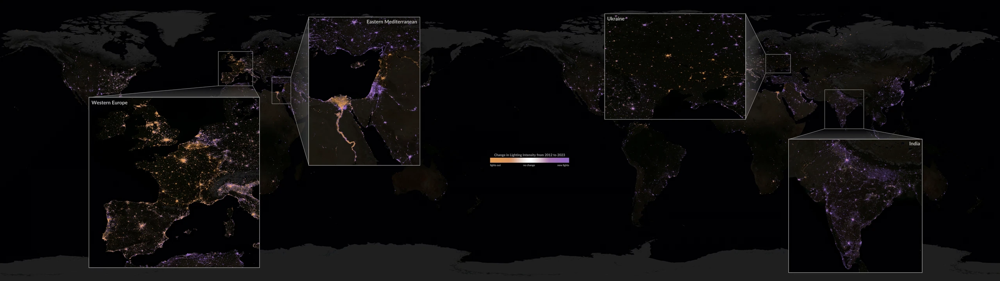

The Earth Information Jukebox
Hear what Earthis telling us.
Where did the night get brighter? Listen to a NASA map of changing lights, then trace every note back to the image.
NASA Earth Information Center · SVS 5313
A decade of night lights
2012 2023
Loading verified frame measurements…

Sound and playback settings
Purple uses 392 Hz on the right. Orange uses 261.626 Hz on the left. Both share the same volume scale.
Hear the difference
Two places. One scale.
Sonic DNA
A fingerprint of change.
Each column is an image band. Purple rises above the line and orange falls below on the same 0–24% scale. Choose a column to find its place in the frame.
Read the bands and sound values
| Band | Rendered brighter | Rendered dimmer | Sound levels |
|---|
How it works
From pixels to pitch.
NASA’s purple and orange show opposite directions of change. EARTHPULSE counts colored pixels in 12 vertical bands inside each NASA inset, then sounds each band as it is highlighted.
The higher voice marks purple and the lower voice marks orange. More of that color raises its volume. Both voices can sound together. A band without either color class is silent.
These percentages describe the published image. The raster contains rendering and compression, and the insets have different map scales. The comparison describes color coverage in the chosen inset windows.